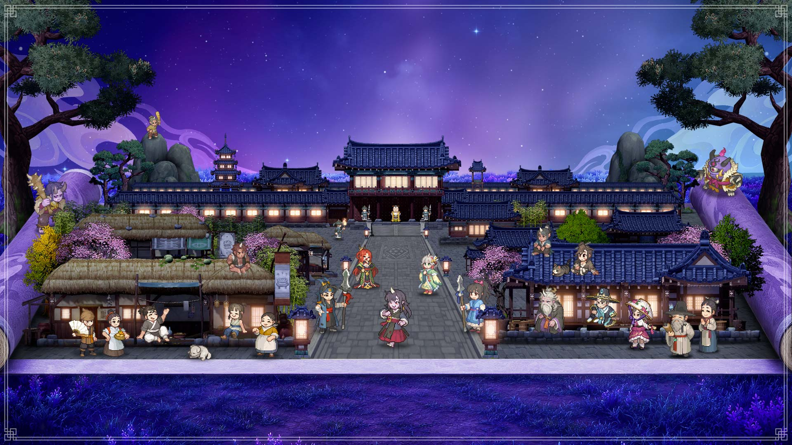
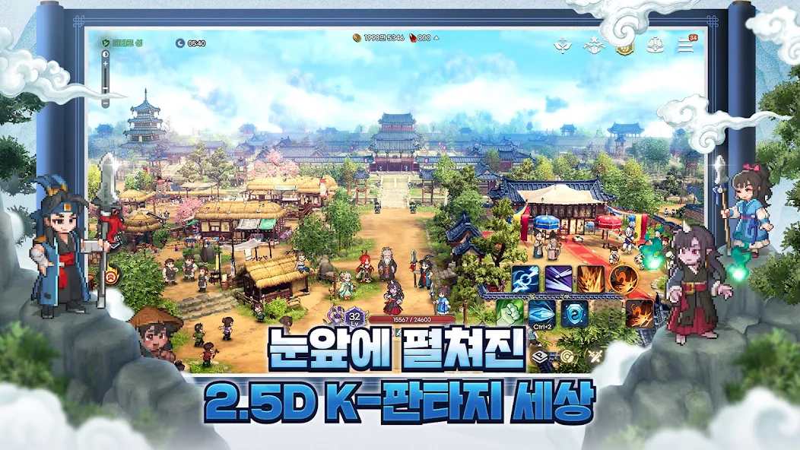
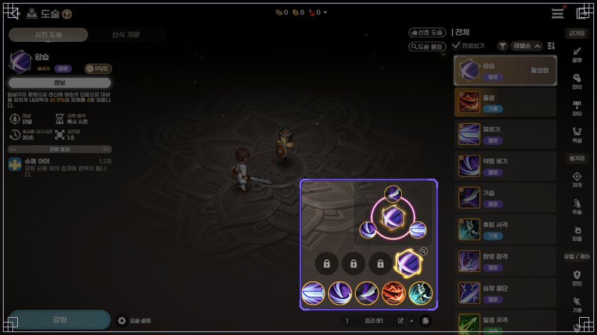
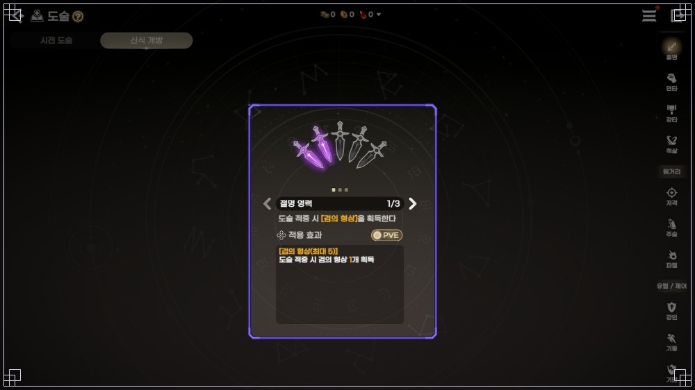
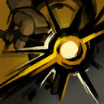
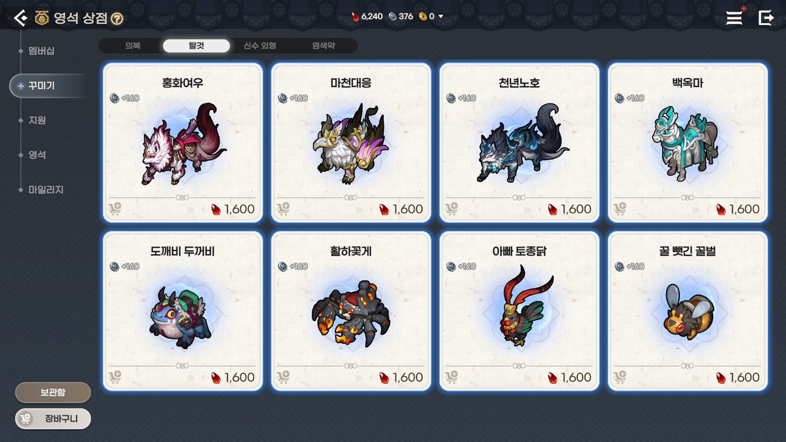
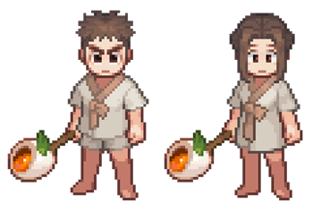
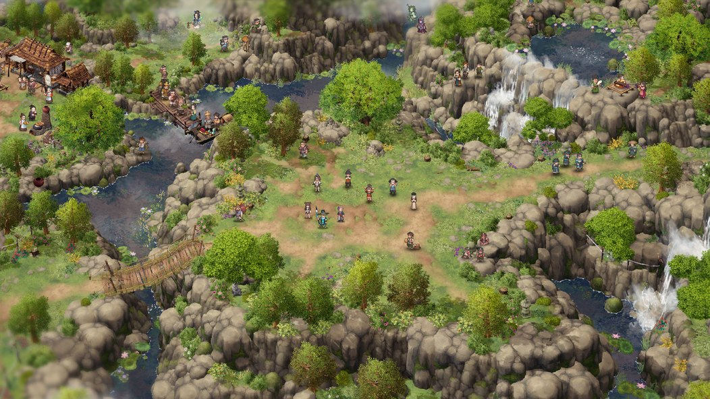
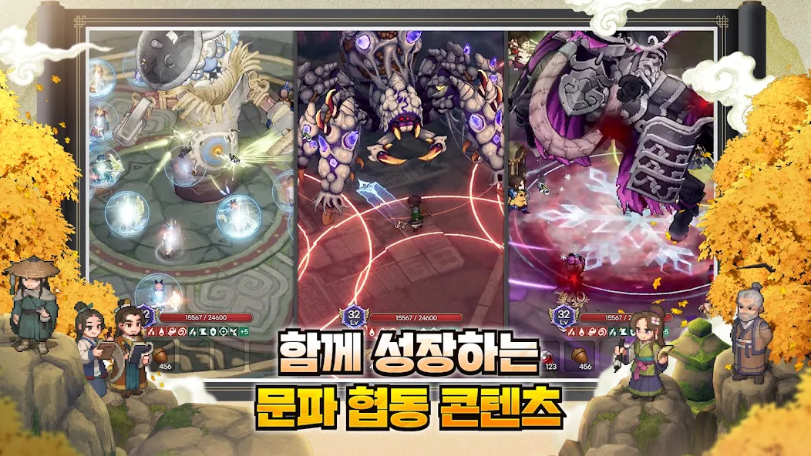
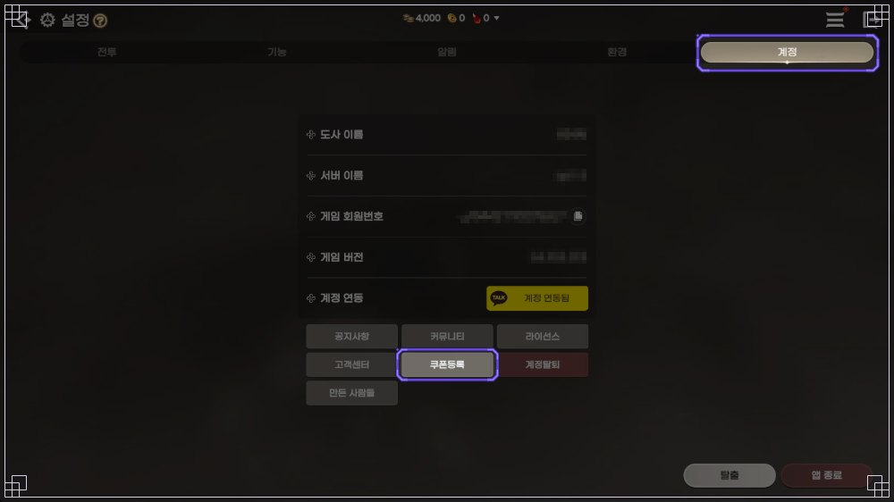

이 게임은 확률형 아이템을 포함하고 있습니다.
도깨비의세계 쇼케이스 이후 정식 출시, MMORPG 신작 플레이 리뷰와 도술 조합·웃긴 외형·탈것 공략 팁 (10월 15일 기준 이벤트·쿠폰)
쇼케이스에서 먼저 소개된 MMORPG 신작 도깨비의세계가 10월 8일(목) 11시에 정식으로 문을 열었는데요, 막상 시작하고 나니 챙길 게 한가득이라 뭐부터 봐야 할지 막막하시죠. 출시 당일 양대 마켓 인기 1위에 이어 10월 13일 매출 1위 소식도 올라왔어요. 저는 직접 해보니 도트 캐릭터가 3D 배경 위를 뛰어다니는 모습이 생각보다 귀엽더라고요.
10월 15일 기준으로 게임 소개, 도술 조합, 외형과 탈것, 그래픽, 공략 팁, 이벤트·쿠폰 순서로 정리했고, 그날 자정에 끝나는 이벤트 3건은 표 맨 위에 올려 뒀어요.

공식 키아트에 담긴 야간 궁궐과 마을 전경
이미지 출처: 카카오게임즈 도깨비의세계 공식 페이지
도깨비의세계는 어떤 게임인가요?
도깨비의세계는 2D 도트 캐릭터와 3D 배경을 겹친 2.5D 그래픽에 한국 설화 세계관을 입힌 카카오게임즈 서비스의 MMORPG입니다. 사전예약 페이지가 첫 번째 특징으로 내세운 문구가 ‘눈앞에 펼쳐진 2.5D K-판타지 세상’이고, 본문 첫 줄은 ‘차원이 다른 도트 세상’이에요. 스토어 화면만 봐도 평면 도트와 입체 배경이 겹친 맛이 느껴져요.

스토어 화면, 낮의 기와 마을 위로 스킬 아이콘이 얹혀 있어요
이미지 출처: Google Play 도깨비의세계
쇼케이스 보도에서 짚은 점은 이래요.
- 쇼케이스에서는 12개 스타일과 90여 종 스킬이 핵심으로 소개됐어요.
- 개발은 ‘바람의나라: 연’을 만든 슈퍼캣이 맡았다고 매체 보도에 나와요.
- 도트 캐릭터에 실시간 3D 조명과 그림자를 입혔다는 설명은 8월 20일 보도에, 360도 카메라 회전 이야기는 9월 9일 보도에 있어요.
세계관은 사전예약 문구대로 한국 설화에서 가져왔어요. 공식 이미지 속 문구는 “이 세계에 정해진 직업은 없습니다.”인데요, 대신 도술을 골라 조합해 자기만의 전투 덱을 만드는 구조예요.
PC 클라이언트에는 모바일과 같은 계정으로 로그인하면 되고, 공식 홈의 리모트 플레이는 PC 게임을 모바일로 원격 조작하는 별개 기능이에요.
게임 안 콘텐츠를 항목별로 묶어 봤어요.
- 문파 콘텐츠: 신기 쟁탈전·미혹의 정원·결계지 방어가 있어요.
- 낙화의 전장: 흩날리는 꽃잎 아래 실력과 전략으로 겨루는 대규모 PvP 전장이에요.
- 필드보스: 소수가 독식하지 않는 협동 레이드이고 함께할수록 보상이 커져요.
- 금전 거래소: 공식 홈은 금전 거래소를 돈 주고 사는 재화가 아니라 게임에서 얻는 금전으로 아이템을 사고파는 곳으로 소개해요.
- 묘롱 안내: 공식 홈은 묘롱을 성장 방향 잡기부터 문파 운영까지 두루 아는 고양이 신령으로 소개하고, 쇼케이스 보도에서는 성장 요소·사냥터·도술을 짚어 주는 AI 챗봇으로도 나와요.
- 오프라인 플레이: 사전예약 페이지는 오프라인 플레이로 접속하지 않을 때도 성장할 수 있다고 소개해요.
도술을 어떻게 조합하면 나만의 전투 스타일이 되나요?
도술 조합은 같은 스타일 도술을 슬롯에 3개 이상 채워 그 스타일의 궁극기를 열고, 나머지 칸을 원하는 도술로 보완해 나만의 전투 스타일을 만드는 방식이에요. 공식 가이드에도 “하단 도술 슬롯(5개)에 같은 스타일 도술을 3개 이상 장착 시, 궁극기 슬롯에 해당 스타일의 궁극기가 자동으로 등록됩니다.”라고 적혀 있고, 예시는 절명 3개로 궁극기 ‘암습’을 여는 식이에요(공식 도술 가이드).

절명 궁극기 ‘암습’이 활성화된 도술 화면, 하단 5칸 위로 잠긴 3칸과 궁극기 칸이 보여요
이미지 출처: 공식 커뮤니티 도술 가이드
슬롯은 총 8개이고 5개는 기본으로 열려 있는데요, 잠긴 3개는 아래 조건으로 풀립니다.
- 영기 수련 5-1 완료
- 전투 멤버십 구매
- 협력 수련 ‘산군의 석등’ 3-1 완료
궁극기가 열리면 ‘신식 개방’ 탭에서 스타일별 궁극기 능력치, 발동 조건, 사용 팁을 볼 수 있어요. 절명을 예로 들면 3단계로 나뉘죠.

‘신식 개방’ 탭의 절명 영력 1/3, 단검 모양 아이콘 5개 중 보라색 2개가 켜져 있어요
이미지 출처: 공식 커뮤니티 도술 가이드
- 1단계: 도술을 맞히면 검의 형상이 쌓여요.
- 2단계: 검의 형상이 3개 이상 쌓인 상태에서 궁극기를 쓰면 전부 사라지는 대신 피해량이 커져요.
- 3단계: 이미 최대치인데 더 얻으면 궁극기 재사용 대기 시간이 줄어듭니다.
남는 칸에 다른 스타일 도술을 끼워도 신식 개방은 그대로 이어지고, 어떤 조합을 쓰라는 강제도 없다는 답변이 출시 전 시연회 Q&A(공식 공지)에 있어요. 같은 공지에는 상황마다 유리한 조합이 달라지도록 준비하고 있다는 답변도 있어서, 이 글에서도 순위는 매기지 않고 원하는 플레이별 조합만 묶었습니다.
플레이별 조합 예시예요. 절명 3개는 공식 가이드 예시고, 나머지는 팬DB(깨비지지) 유저 추천 기준이에요.
- 한 대상에게 피해를 몰아 주고 싶다면: 절명 3개에 저격 계열로 보완(10월 15일 새벽 조회 기준 54명)
- 여러 마리를 한 번에 사냥하고 싶다면: 연타 3개에 파멸 계열로 보완(10월 15일 새벽 조회 기준 90명)
- 이동기로 거리를 좁히며 광역 사냥을 하고 싶다면: 기동 3개에 저격 계열로 보완(10월 15일 새벽 조회 기준 207명)
추천 수는 조회할 때마다 바뀌고, 추천한 사람의 수일 뿐 성능 순위가 아니에요. 전체는 깨비지지 도술 덱 빌더에서 볼 수 있어요.
| 스타일 | 한 줄 정리 | 궁극기 |
|---|---|---|
| 절명 · 근거리 | 단검으로 파고들어 한 명을 연달아 찌르는 암살형 | 암습 |
| 주먹과 편곤을 쉴 새 없이 휘둘러 피해를 쌓는 연속 공격 | 폭주 | |
| 강타 · 근거리 | 망치와 대검을 모았다가 묵직하게 내려찍는 일격형 | 천벌 |
 척살 · 근거리 | 먹 그림자가 따라붙는 발도 검술 | 일필휘지 |
| 저격 · 원거리 | 활과 쇠뇌로 멀리서 겨누는 정밀 사격 | 정조준 |
| 부적과 저주로 범위를 잠식하며 이어 때리는 타입 | 신내림 | |
| 번개·얼음·화염으로 범위를 쓸어 담는 광역 마법형 | 대폭발 | |
| 강인 · 유틸/제어 | 방패로 버티고 밀쳐내는 방어 유틸 | 방패 낙하 |
| 기동 · 유틸/제어 | 돌진과 순간이동으로 거리를 좁히는 이동기 중심 | 연속 쇄도 |
| 헌신 · 유틸/제어 | 피해를 주면서 아군에게 이로운 효과를 보태는 지원형 | 개전의 가호 |
| 기만 · 유틸/제어 | 환영 단검으로 때리고 적의 이로운 효과를 걷어내는 제어형 | 회전하는 칼날 |
| 제압 · 유틸/제어 | 사슬과 얼음 감옥으로 묶고 가두는 속박 중심 | 사슬 묶기 |
도술 스타일 자료 출처: 도깨비의세계 공식 커뮤니티 도깨비 서고 근거리편·원거리편·유틸/제어편
도깨비 수련장에서는 허수아비를 때려 총 피해량, 초당 피해량, 도술별 점유율을 볼 수 있고 영기 수련 9-1을 마치면 열려요. 10월 14일 점검에서는 일부 스타일의 PvP·PvE 피해량이 올랐고, 10월 21일(수) 정기 점검에서는 도술 강화·돌파 내역이 초기화되고 사용한 재화는 소급 지급될 예정입니다(도술 초기화 공지).
스타일별 조합은 같은 블로그의 출시 전(9월 23일) 기준인 도술 스타일 12가지와 신식 개방 조건 글에, 유저 추천 구성은 10월 11일(패치 전) 기준인 도술 조합 추천 유저 추천 빌드 7개 글에 있어요.
외형과 탈것은 어떤 게 있나요?
외형과 탈것은 영석 상점의 탈것·의복 세트·신수 외형처럼 이름부터 웃긴 게 많고, 전부 능력치가 없어서 성능 걱정 없이 꾸미기만 즐기면 돼요(공식 의복 가이드·탈것 가이드). 탈것은 홍화여우·마천대응·천년노호·백옥마 같은 멋진 이름 옆에 도깨비 두꺼비·활화꽃게·아빠 토종닭·꿀 뺏긴 꿀벌이 나란히 팔려서 저는 이름만 읽다가 웃었네요ㅎㅎ 8종 모두 영석 상점에서 1,600 영석이에요. 가격은 출시 당일 판매 안내 기준이고 10월 10일 점검으로 일반 탈것 상자 28종이 더 추가됐어요.

출시 당일 안내의 영석 상점 탈것 탭에 홍화여우부터 꿀 뺏긴 꿀벌까지 8장 카드가 나란히 보여요
이미지 출처: 공식 커뮤니티 영석 상점 안내
의복 세트는 달맞이 꽃 행차·토끼잠옷·근육 늑대·야광귀·우장산적·실패한 착호갑사, 신수 외형은 갓쓴 초롱·자객 고비·낚시꾼 고비 같은 이름이 있어요. 의복 염색은 투구와 갑옷만 가능하고(공식 의복 가이드), 염색약은 공식 TIP에 ‘깊은 밤바다’·‘달빛 은하수’·‘타오르는 불꽃’ 등이 있어요. 신수 외형 ‘꿀떡 까미’는 쿠폰 도깨비1008로 받는 꿀떡 무기와는 다른 물건이니 헷갈리지 마세요.
꿀떡 무기는 11월 5일 23:59까지 쿠폰으로, 한글 무기 (검)·(도)·(봉)·(선)·(활) 5종은 훈민증표 1,200개로 레벨 50부터 10월 21일 08:00까지 바꿀 수 있어요. 한정 탈것 백선운은 피카플레이 PC방 이벤트로 받습니다. 방법은 같은 블로그의 백선운 얻는 법 글에 있어요.

국자 모양 막대 끝에 꿀떡이 달린 꿀떡 무기를 든 남녀 도트 도사
이미지 출처: 공식 커뮤니티 공지
내가 입혀 본 외형과 탈것을 탄 모습
그래픽·이펙트·맵은 어떤가요?
그래픽은 도트 캐릭터와 3D 지형을 겹친 2.5D에 한국풍 마을과 사냥터가 얹힌 구성이고, 도술 이펙트는 도술 화면에서 사용 모션을 미리 볼 수 있어요. 공식 ‘깨비 명소’ 영상 시리즈는 연무림, 비명 동굴, 귀명촌, 타바로 성 네 곳을 소개하는데, 타바로 성은 아마 도사가 가장 많이 모이는 곳일 거라고 소개돼요. 사전예약 페이지 지형 이미지는 협곡과 폭포, 구름다리, 물가 마을이 한눈에 들어오는 3D 항공 시점이죠.

협곡과 폭포, 구름다리와 마을, NPC가 보이는 3D 항공 시점 지형(일부 크롭)
이미지 출처: 도깨비의세계 공식 사전예약 페이지
사냥터는 안개 기슭, 산신의 영역, 황무지 마을, 우물 동굴 같은 필드가 있고, 세계지도에서 전투력에 맞는 사냥터를 추천받아 걸어서나 축지술로 갈 수 있어요.
직접 담은 타바로 성 전경과 사냥터 화면
공식 도술 가이드를 보면 도술 화면에서 도술을 고르면 화면 가운데에서 사용 모션을 미리 볼 수 있고, 탈것은 손가락이나 마우스로 360도 돌려 볼 수 있어요. 스토어 스크린샷 속 보스전은 보스 도트가 화면을 가득 채우고 도술 이펙트가 겹쳐서 크기감이 인상적이더라고요.

보스전 3분할 화면에 도술 이펙트와 보스 도트가 겹쳐 보이는 스토어 스크린샷
이미지 출처: Google Play 도깨비의세계
공략 팁, 뭐부터 챙기면 되나요?
공략 팁 중 먼저 챙길 건 10월 21일 초기화 예고와 도술 강화가 스타일 단위라는 점이고, 이어서 궁극기 쿨타임, 조각 수급처, 재화·거래소 규칙 순이에요.
- 도술 강화는 스타일 단위: 한 번 강화하면 같은 스타일 도술이 한꺼번에 오르고 요령서도 스타일별로 따로 써요(공식 성장 가이드). 초기화 일정은 위 도술 조합 절에 적어 뒀어요.
- 궁극기 쿨타임 비교: 10월 10일 팁 기준 절명 ‘암습’ 30초, 연타 ‘폭주’ 50초, 주술 ‘신내림’ 78.2초, 파멸 ‘대폭발’ 159.1초예요(공식 TIP). 10월 14일 점검의 돌파 쿨타임 상한 조정으로 값이 달라졌을 수 있어요.
- 도술 조각 수급: 이벤트·쿠폰으로 받는 방법은 도전! 문파 전투, ‘1위 도술 조각 선택 상자’가 든 쿠폰, 전래동화 별의 조각 교환이 있어요. 도술 하나에 조각 100개가 필요한데 문파 전투 상자는 상자당 100개예요.
- 재화는 영석·엽전·금전: 금전 거래소는 보증금과 수수료가 있고(공식 거래소 가이드), 10월 14일부터 강화·각성한 일반·희귀 장비는 등록할 수 없으며 금전 1개당 엽전 교환비가 300개로 올랐어요(10월 14일 업데이트 안내).
지금 받을 수 있는 이벤트는 뭐가 있나요?
10월 15일 기준 진행 중인 이벤트는 마감이 빠른 순서로 아래 표에 모았고, 인게임 이벤트 중 절반가량은 10월 21일 08:00 전후에 끝나요. 10월 14일 점검 보상은 끝났어요.
| 이벤트 | 마감 | 보상과 참여 |
|---|---|---|
| 10월 14일 긴급 라이브 사과 보상 | 10월 16일 00:00(15일 자정) | 접속하면 우편으로 엽전 (귀속) 2,000,000개·요혼석 (귀속) 200개 등, 14일 19:43 이전 생성 계정, 계정당 1회 |
| 묘롱 찾기 | 10월 15일 23:59 | 비하인드 영상 속 묘롱 등장 횟수 댓글, 상품권 추첨(발표 10월 22일) |
| 흔적 찾기·초성 퀴즈 | 10월 15일 23:59 | 공지 댓글 초성 퀴즈 또는 [도깨비인증] 사진, 상품권 추첨(발표 10월 22일) |
| 요화선녀 서버 보상 | 10월 21일 점검 전 | 낙화의 전장 보스 처치, 서버 기여도 1·2·3위 요혼석 30·10·5개 |
| 초보 도사 성장 지원 | 10월 21일 08:00 | 일차별 미션, 엽전 25,000개 등 |
| 도깨비의세계 패스 | 10월 21일 08:00 | 일일 미션 포인트로 레벨 보상 |
| 훈민증표 수집 | 10월 21일 08:00 | 한글 무기 교환, 레벨 50 필요 |
| 한글날 OX 퀴즈 | 10월 21일 08:00 | 매일 19:30, 엽전·훈민증표, 레벨 50 필요 |
| 몽련이 드리는 특별 선물 | 10월 21일 08:00 | 접속하면 우편, 요혼석 300개 등 |
| 커뮤니티 이벤트 3종 | 10월 21일 23:59 | 이름은 표 아래, 상품권 추첨(발표 10월 28일) |
| 치지직·SOOP 드롭스 | 10월 28일 점검 전 | 시청 시간별 가호 주머니, 신청은 11월 7일까지 |
| 피카플레이 PC방 이벤트 | 11월 1일 23:59 | 누적 5시간 상자 쿠폰(백선운), 출석 마일리지는 조기 소진 |
| 특별 출석 | 11월 4일 08:00 | 매일 접속 보상, 14일 차 희귀 가호 선택 상자 |
| 전래동화 콩쥐 팥쥐 | 12월 10일 08:00 | 별의 조각을 미누에게 교환 |
| 단련의 길·단 봉인 해제 | 2027년 10월 6일 08:00 | 목표 전투력 달성 보상, 봉인 해제 단계마다 엽전 (귀속) 100,000개 |
| 도전! 문파 전투 | 별도 공지 시까지 | 4개 콘텐츠 1회씩, 도술 조각 선택 상자 최대 8개 |
커뮤니티 이벤트 3종 이름은 이래요.
- 타바로 성에 입성한 도사님 모여 주세요! 스크린샷과 소감을 [타바로입성] 말머리로 게시판에 올려요.
- 도사님의 문파를 홍보해 보세요! 문파 모집 게시판에 홍보 글을 올리면 자동 참여예요.
- 혼자 알고 있기 아까운 도사님의 비법을 공유해 주세요! [비법 공유] 말머리가 없으면 인정되지 않아요.
쿠폰 코드는 몇 종이고 어디에 입력하나요?
쿠폰 코드는 10월 15일 기준 9종이고, 설정의 계정 탭에서 ‘쿠폰등록’으로 입력해요. 라이브 감사 3종인 도깨비의다짐·도깨비의약속·도깨비의마음은 공지 기준 기한 제한 없이 계정당 1회씩이에요.
| 코드 | 구성 | 기한 | 횟수 |
|---|---|---|---|
| 도깨비1008 | 꿀떡 무기 외형 | 11월 5일 23:59 | 공지에 횟수 표기 없음 |
| 칭호나와라뚝딱 | 칭호 [타바로 소식통], 엽전 100,000개 | 11월 11일 23:59 | 공지에 횟수 표기 없음 |
| 애플1위풍악을울려라 | 염색약 선택 상자 1개, 엽전 111,111개, 1위 기념 도술 조각 선택 상자 1개 | 11월 11일 23:59 | 계정당 1회 |
| 구글1위잔치로구나 | 애플 쿠폰과 같은 구성 | 11월 11일 23:59 | 계정당 1회 |
| 매출1위감사합니다 | 의복 랜덤 열쇠 1개, 단일 염색약 선택 상자 11개, 요혼석 1,111개, 엽전 1,111,111개 | 11월 11일 23:59 | 계정당 1회 |
| 도깨비의다짐 | 가호 주머니 20개, 엽전 1,000,000개, 희귀 가호의 정수 100개 | 제한 없음 | 계정당 1회 |
| 도깨비의약속 | 1위 도술 조각 선택 상자 3개, 도술 강화 요령서 선택 첩 10개, 요혼석 100개 | 제한 없음 | 계정당 1회 |
| 도깨비의마음 | 요혼석 200개, 도전자의 희귀 장신구 선택 상자 1개, 희귀 무기 선택 상자 1개 | 제한 없음 | 계정당 1회 |
| 도깨비의내일 | 산척의 방어구 도안 선택 상자 1개, 기운 발현 재료 선택 상자 50개, 레이드 추가 티켓 1개, 영기 수련 가속권(10분) 6개, 3단계 체력 회복 물약 100개 | 11월 11일 23:59 | 공지에 횟수 표기 없음 |
라이브 감사 3종은 같은 블로그의 라이브 방송 감사 쿠폰 3종 글에 10월 10일 기준으로 있고, 도깨비의내일까지 넣은 최신 표는 위 표예요. 칭호나와라뚝딱은 사전예약 공지에 11월 7일로 해석될 수 있는 문구가 있어서, 최신 종합 안내에 적힌 11월 11일로 정리했어요.
PC와 안드로이드는 메인 화면 우측 상단 메뉴 ▶ 시스템 ▶ 설정 ▶ 계정 탭의 쿠폰등록에서, iOS는 쿠폰 사이트에서 게임 회원번호와 코드를 넣어요. 보상은 우편함으로 오고, 잘못 수령한 보상은 복구가 되지 않아요(쿠폰 등록 가이드).

설정의 ‘계정’ 탭에서 ‘쿠폰등록’ 버튼을 누르면 돼요(개인정보 칸은 가려져 있어요)
이미지 출처: 공식 커뮤니티 쿠폰 등록 가이드
개별 발급 쿠폰은 표에서 뺐어요. 사전예약 갓·탈것 선택 상자는 11월 7일 23:59까지, PC방 프로모션 상자는 11월 30일 23:59까지 등록해요.
자주 묻는 질문
Q. 도술 초기화는 어디까지 적용되나요?
도술 초기화 공지 기준 강화와 돌파 내역이 대상이고 각성은 빠져요. 돌파는 기대값이 아니라 실제 시도 횟수와 쓴 재화 기준으로 소급 계산합니다.
Q. PC에서는 어떻게 설치하나요?
공식 홈 다운로드 안내에서 Google Play Games 버튼을 거쳐 Windows용 런처를 설치하고, 앱플레이어는 차단돼 있습니다.
Q. 쿠폰 사이트에서 입력하면 보상은 어느 캐릭터가 받나요?
최초로 접속한 캐릭터나 접속 중인 캐릭터의 우편함으로 가고, 게임 안에서 입력하면 쓴 캐릭터의 우편함으로 옵니다.
도깨비의세계 플레이 리뷰와 이벤트·쿠폰 정리
한마디로 도술 칸을 이리저리 바꿔 가며 내 스타일을 짜는 맛이 이 게임의 중심이라는 게 제 소감이에요. 10월 21일 초기화 전에는 수련장에서 조합을 바꿔 보며 취향부터 찾아보세요. 이벤트와 쿠폰은 공지로 수시로 바뀌니까 공식 쿠폰 종합 안내와 이벤트 한눈에 보기를 같이 열어 두시고, 소식은 공식 홈과 공식 커뮤니티에서 볼 수 있어요.
✔ 도깨비의세계 같이 보기 좋은 내용
· 도깨비의세계 직업 없다? 도술 스타일 12가지 4계열로 조합하는 법, 신식 개방 조건까지
· 도깨비의세계 도술 조합 추천 유저 추천 빌드 7개, 암습 빌드 시전 순서와 도술 슬롯 해금 조건
· 도깨비의세계 라이브 방송 감사 쿠폰 3종, 도깨비의다짐·약속·마음 보상과 사용 기한 정리
· 도깨비의세계 백선운 탈 것 얻는 법, PC방 안 가고 집 PC 크래프트박스로 누적 5시간 채우는 5단계
참고한 곳 (2026.10.15 기준)
· 공지: 1019 · 1132 · 9112 · 9122 · 9200 · 10503 · 12167 · 12257 · 13991 · 14412 · 17089 · 17815 · 19240
· 가이드: 7733 · 7739 · 7834 · 7854 · 7856 · 7862 · 7903 · 7981
· 팁: 8063 · 8080 · 13133 · 서고: 3415 · 3431 · 3433 · 3641 · 3642 · 4134 · 4135 · 업데이트: 18403
· 이벤트: 3646 · 3648 · 9190 · 9196 · 9217 · 9226 · 9233 · 9237 · 9240 · 9243 · 9248 · 9285 · 9983 · 9990 · 10001 · 10676 · 13114
· 공식: 홈 · 사전예약 페이지 · 다운로드 안내 · 카카오게임즈 사전예약
· 매체 보도: 이코노미스트 · 바이라인네트워크 · 아이뉴스24